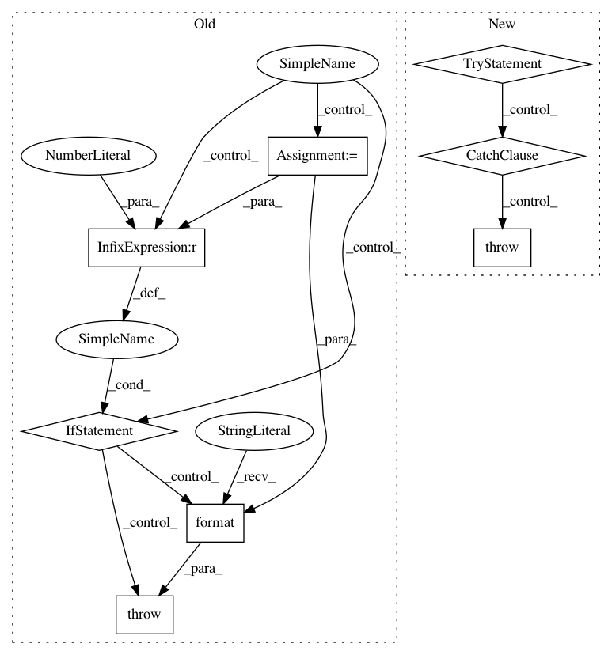

879df20df1df1b9cf16e29cb4a2836f4831f23d9,src/python/pants/backend/python/tasks/build_local_python_distributions.py,BuildLocalPythonDistributions,_create_dist,#BuildLocalPythonDistributions#Any#Any#Any#Any#Any#,253
Before Change
cmd = safe_shlex_join(setup_requires_pex.cmdline(setup_py_snapshot_version_argv))
with self.context.new_workunit("setup.py", cmd=cmd, labels=[WorkUnitLabel.TOOL]) as workunit:
with pushd(dist_target_dir):
result = setup_requires_pex.run(args=setup_py_snapshot_version_argv,
stdout=workunit.output("stdout"),
stderr=workunit.output("stderr"))
if result != 0:
raise self.BuildLocalPythonDistributionsError(
"Installation of python distribution from target {target} into directory {into_dir} "
"failed (return value of run() was: {rc!r}).\n"
"The pex with any requirements is located at: {interpreter}.\n"
"The host system"s compiler and linker were used.\n"
"The setup command was: {command}."
.format(target=dist_tgt,
into_dir=dist_target_dir,
rc=result,
interpreter=setup_requires_pex.path(),
command=setup_py_snapshot_version_argv))
// TODO: convert this into a SimpleCodegenTask, which does the exact same thing as this method!
def _inject_synthetic_dist_requirements(self, dist, req_lib_addr):
Inject a synthetic requirements library that references a local wheel.
:param dist: Path of the locally built wheel to reference.
After Change
cmd = safe_shlex_join(setup_py_runner.cmdline(setup_py_snapshot_version_argv))
with self.context.new_workunit("setup.py", cmd=cmd, labels=[WorkUnitLabel.TOOL]) as workunit:
try:
setup_py_runner.run_setup_command(source_dir=Path(dist_target_dir),
setup_command=setup_py_snapshot_version_argv,
stdout=workunit.output("stdout"),
stderr=workunit.output("stderr"))
except SetupPyRunner.CommandFailure as e:
raise self.BuildLocalPythonDistributionsError(
f"Installation of python distribution from target {dist_tgt} into directory "
f"{dist_target_dir} failed using the host system"s compiler and linker: {e}")
// TODO: convert this into a SimpleCodegenTask, which does the exact same thing as this method!
def _inject_synthetic_dist_requirements(self, dist, req_lib_addr):
Inject a synthetic requirements library that references a local wheel.
:param dist: Path of the locally built wheel to reference.
In pattern: SUPERPATTERN
Frequency: 3
Non-data size: 8
Instances
Project Name: pantsbuild/pants
Commit Name: 879df20df1df1b9cf16e29cb4a2836f4831f23d9
Time: 2019-12-08
Author: john.sirois@gmail.com
File Name: src/python/pants/backend/python/tasks/build_local_python_distributions.py
Class Name: BuildLocalPythonDistributions
Method Name: _create_dist
Project Name: pantsbuild/pants
Commit Name: d323c65240afc7a47c7c42fdcadb57d70fab1157
Time: 2016-03-14
Author: benjyw@gmail.com
File Name: src/python/pants/backend/python/tasks/pytest_run.py
Class Name: PytestRun
Method Name: _maybe_shard
Project Name: pantsbuild/pants
Commit Name: c15e9b0930ea6ce6eef5be7c6c00b9ee2b706865
Time: 2020-02-21
Author: john.sirois@gmail.com
File Name: src/python/pants/backend/python/tasks/build_local_python_distributions.py
Class Name: BuildLocalPythonDistributions
Method Name: _create_dist